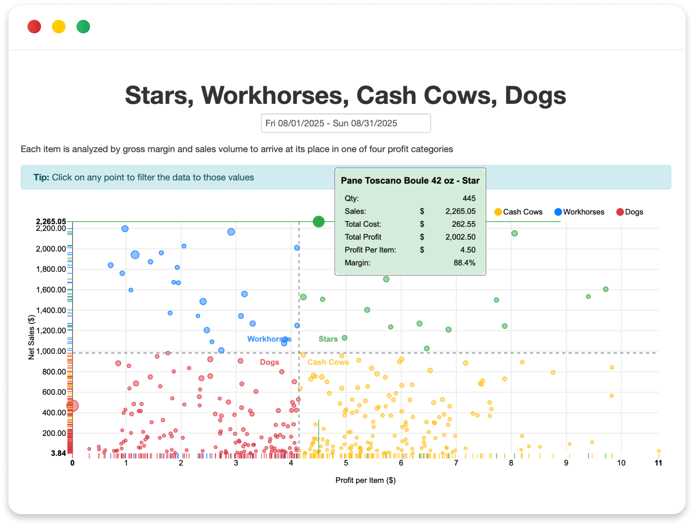

Add your own structure
Create unlimited attributes for your sales catalogue, customers, and customer addresses so your data matches real bakery workflows.
Finance & Reporting
Manage invoices, statements, payment collection, reports, and business data in one connected bakery ERP software platform.

What it does
Streamline combines bakery invoicing software, bakery billing software, and bakery reporting software in the same system used for orders, customers, delivery, and operations. That means less re-entry, cleaner records, and faster answers when your team needs them.
From live customer statements and batch invoices to payment collection, pivot-table reporting, and flexible attributes, Streamline helps wholesale bakeries run finance and reporting without the usual spreadsheet mess.
Overview: Streamline is one connected bakery management software for invoices, statements, payment collection, reporting, and flexible data structure. It helps bakeries manage accounts receivable, automate customer billing workflows, create reports, and organize business data inside one bakery ERP software platform.
Why it matters
Streamline is a bakery reporting software that connects invoices, statements, payment collection, forecasting, and flexible data in one bakery ERP software system.
Create, print, and email invoices and credits in batches without rebuilding the same data in separate systems.
Customers can have up-to-date self-service statements, with accounting reconciliation feeding back into Streamline.
Set rules for reminders, statements, and auto-collection so overdue follow-up takes less manual effort.
Build reports, pivot tables, and charts that help teams track sales, trends, and exceptions without digging through exports.
Use attributes and batch editing to organize data in ways that match your bakery, not a generic software template.
Billing and reporting stay tied to customers, delivery, pricing, orders, and production workflows.
Use Streamline as bakery business intelligence software for margin, sales, and performance visibility.
One connected bakery management software system beats juggling Excel files, PDFs, inboxes, and separate finance workflows.
Invoices & Statements
Streamline helps bakeries manage invoice publishing, credit notes, customer billing cycles, and live statements in one place. It supports practical bakery workflows, from route-based invoicing to customer-specific billing settings.
This gives bakeries cleaner bakery invoicing software workflows and reduces the back-and-forth between customer service, delivery, and accounts receivable.
PAYMENT COLLECTION
Streamline supports payment collection workflows with rules, reminders, and integrations that help bakeries stay on top of receivables. Instead of manually checking who is overdue, teams can automate more of the follow-up.
Set rules for when to send statements and collect payment, so routine follow-up happens inside one bakery billing software workflow.
Use credit limits, overdue reminders, and account holds when customers exceed terms or go past their limit.
Keep customer statements up to date, with accounting reconciliation feeding back into Streamline’s A/R view.
Connect payment collection to invoices, statements, customer accounts, and finance workflows in one bakery ERP software system.
Reporting & Forecasting
Streamline gives bakeries flexible reporting tools that go beyond basic exports. Build pivot tables, charts, and operational reports that help teams understand sales, demand patterns, customer behavior, and performance trends.
Build pivot tables, charts, and out-of-the-box reports that fit real bakery workflows — with filters, grouping, shortcuts, and formats that make bakery reporting software actually useful.
Track sales trends, year-on-year changes, order deviations, and demand patterns faster, helping teams make better planning decisions with connected bakery sales reporting software.
Track year-on-year trends, 80/20 performance, and order deviations, with scheduled reports and alerts that help teams spot changes sooner and make faster decisions.
FLEXIBLE DATA STRUCTURE
Not every bakery thinks in the same columns. Streamline’s flexible data structure lets teams add attributes to customers, addresses, and catalogue records, then use those attributes to filter, group, and structure reports.
Create unlimited attributes for your sales catalogue, customers, and customer addresses so your data matches real bakery workflows.
Use batch edit in spreadsheet mode to copy, paste, and update whole lists quickly — no opening records one by one.
Use attributes to group and filter data for departments, customer types, packing logic, and performance views inside bakery reporting software and bakery business intelligence software workflows.
Flexible data support: Streamline helps bakeries manage attributes, batch edits, customer classifications, and report-ready data inside one connected bakery management software platform — so the system fits your bakery, not the other way around.
Complete feature list
FAQ
Yes. Streamline includes invoice and credit note workflows, batch invoice printing and emailing, customer billing settings, and live statements inside one connected bakery invoicing software system.
Yes. Streamline supports automated payment collection workflows, statement sending, Stripe-based collection, overdue reminders, and account controls for customers who exceed terms or credit limits.
Streamline includes pivot tables, charts, saved reports, order deviation alerts, year-on-year analysis, 80/20 reporting, and customizable operational reports. It supports bakery reporting software and bakery business intelligence software needs.
It means you can add unlimited attributes to key lists like customers, addresses, and catalogue items, then use those attributes to filter, group, edit, and report on data in ways that match your bakery.
Yes. Tools like Menu Engineering, sales reporting, and flexible reporting help support bakery margin tracking software and food COGS software style analysis.
Related features
Finance & reporting connects to every other part of Streamline.
Get started
Connect invoices, statements, payment collection, reporting, forecasting views, and flexible business data in one bakery ERP software system.